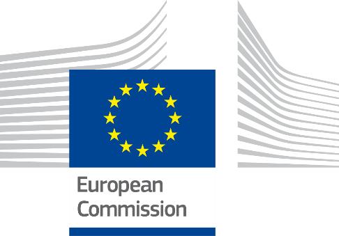

ISA2


Digital Public Administration factsheet 2021
Finland
2 Digital Public Administration Highlights 10
3 Digital Public Administration Political Communications 11
4 Digital Public Administration Legislation 19
5 Digital Public Administration Governance 24
6 Digital Public Administration Infrastructure 31
7 Cross-border Digital Public Administration Services for Citizens and Business 41
Please note that the data collection exercise for the update of the 2021 edition of the Digital Public Administration factsheets took place between March and June 2021. Therefore, the information contained in this document reflects this specific timeframe.

Country
Profile
1
Population: 5 521 606 inhabitants (2019)
GDP at market prices: 237 467 million euros (2020)
GDP per inhabitant in PPS (Purchasing Power Standard EU 27=100): 115 (2020)
GDP growth rate: -2.8% (2020)
Inflation rate: 0.4% (2020)
Unemployment rate: 7.8% (2020)
General government gross debt (Percentage of GDP): 69.2% (2020)
General government deficit/surplus (Percentage of GDP): -5.4% (2020)
Area: 338 400 km²
Capital city: Helsinki
Official EU language: Finnish, Swedish
Currency: Euro
Source: Eurostat (last update: 28 June 2021)
The following graphs present data for the latest Digital Public Administration Indicators for Finland compared to the EU average. Statistical indicators in this section reflect those of Eurostat at the time the Edition is being prepared.
Percentage of individuals using the internet for interacting with public authorities in Finland | Percentage of individuals using the internet for obtaining information from public authorities in Finland |
|
|
Percentage of individuals using the internet for downloading official forms from public authorities in Finland
| Percentage of individuals using the internet for sending filled forms to public authorities in Finland
|
In 2017, the European Commission published the European Interoperability Framework (EIF) to give specific guidance on how to set up interoperable digital public services through a set of 47 recommendations. The picture below represents the three pillars of the EIF around which the EIF Monitoring Mechanism was built to evaluate the level of implementation of the EIF within the Member States. It is based on a set of 71 Key Performance Indicators (KPIs) clustered within the three main pillars of the EIF (Principles, Layers and Conceptual model), outlined below.

Source: European Interoperability Framework Monitoring Mechanism 2020
For each of the three pillars, a different scoreboard was created to breakdown the results into their main thematic areas (i.e. the 12 principles of interoperability, the interoperability layers and the components of the conceptual model). The thematic areas are evaluated on a scale from one to four, where one means a lower level of implementation and 4 means a higher level of implementation. The graphs below show the result of the second EIF Monitoring Mechanism data collection exercise for Finland in 2020.

Source: European Interoperability Framework Monitoring Mechanism 2020
Finland’s results in Scoreboard 1 show an overall good implementation of the EIF Principles, despite the lack of data for Principle 3[1] (Transparency), scoring above the European average for Principle 1 (Subsidiarity and Proportionality) and 9 (Multilingualism). Areas of improvements are concentrated in the Principles 7 (Inclusion and Accessibility) and 12 (Assessment of Effectiveness and Efficiency) for which the score of 3 shows an upper-medium performance in the implementation of corresponding recommendations. Indeed, the use of e-accessibility specifications to ensure all public services are accessible to all citizens, including persons with disabilities, the elderly and other disadvantaged groups (Principle 7 – Recommendation 14) and the implementation of evaluation mechanisms to assess the effectiveness and efficiency of interoperable solutions (Principle 12 – Recommendation 19) are partial and could be bettered to reach the maximum score of 4.

Source: European Interoperability Framework Monitoring Mechanism 2020
The Finish results for the implementation of interoperability layers assessed for Scoreboard 2 shows an overall good performance with scores of 3 and 4. Potential areas of improvement to enhance the country’s implementation of the recommendations under Scoreboard 2 are concentrated in the areas of legal and organisational interoperability. More specifically, the score of 1 for Finland in Recommendation 28, stating that business processes should be documented using commonly accepted modelling techniques to ensure their alignment, lowers the overall organisational interoperability result for Finland.

Source: European Interoperability Framework Monitoring Mechanism 2020
Finland’s scores assessing the Conceptual Model in Scoreboard 3 show a good performance in the implementation of recommendations associated with internal and external information sources and services, base registries and open data. However, some improvements can be made in implementing recommendations related to the conceptual model itself, to catalogues as well as in the area of security and privacy. Precisely, the lack of a common scheme for interconnecting loosely coupled service components and putting in place the necessary infrastructure for establishing and maintaining public services (Conceptual Model - Recommendation 35) hinders the overall Finnish score on the conceptual model.
Additional information on Finland’s results on the EIF Monitoring Mechanism is available online through interactive dashboards.
The graph below presents the main highlights of the latest eGovernment Benchmark Report, an assessment of eGovernment services in 36 countries: the 27 European Union Member States, as well as Iceland, Norway, Montenegro, the Republic of Serbia, Switzerland, Turkey, the United Kingdom, Albania and Macedonia (referred to as the EU27+).
The study evaluates online public services on four dimensions:
The 2021 report presents the biennial results, achieved over the past two years of measurement of all eight life events used to measure the above-mentioned key dimensions. More specifically, these life events are divided between six ‘Citizen life events’ (Career, Studying, Family life, measured in 2020, and Starting a small claim procedure, Moving, Owning a car, all measured in 2019) and two ‘Business life events’ (Business start-up, measured in 2020, and Regular business operations, measured in 2019).
 Source: eGovernment Benchmark Report 2021 Country Factsheet
Source: eGovernment Benchmark Report 2021 Country Factsheet

Digital Public Administration Highlights
2
Digital Public Administration Political Communications
On 15 March 2021, Finland’s preliminary Recovery and Resilience Plan was published as a part of the Sustainable Growth Programme for Finland. The goals of the Programme are to create a competitive operating environment for businesses and to turn Finland into a world-class producer of data-driven services for digital societies, together with secure solutions for these services. The Programme will strengthen the digital transition in the Finnish society through measures that boost digital, technological and data investments.
The Finnish government released in December 2020 its Strategy for Public Governance Renewal, which will guide and strengthen the renewal of public governance as a whole from 2020 to 2030. A consistent and determined renewal of governance as described in the strategy will streamline everyday services, ensure legal certainty in society and create new opportunities for business and communities. The strategy seeks to strengthen good governance across the country and in both national languages. It strives to improve digital accessibility and encourage wider use of plain language in administration.
Digital Public Administration Legislation
The Openness of Government Activities Act (621/1999 with amendments) provides for the general right to access any official document (including electronic records) in the public domain held by public authorities and private bodies that exercise public authority. Finland has chosen to implement Directive 2003/98/EC on the reuse of public sector information (PSI) by amending the Openness of Government Activities Act. Finland is preparing to implement recast Directive 2019/1024/EC on open data and the re-use of public sector information in 2021. In February 2021, Ministry of Justice set up a working group for the update of the Act in accordance with need identified in the Government Programme to extend its application to data and information more broadly.
Digital Public Administration Governance
According the Information Management in Public Administration Act (906/2019), the Ministry of Finance is responsible for the general management of the interoperability of public administration data resources as well as the coordination of co-operation between authorities regarding information management and the production of ICT services. To this end, in the autumn of 2020, the Ministry set up co-operation groups on information management strategic goals, information security and operational architecture.
Digital Public Administration Infrastructure
In January 2021, new functionalities were published to the HILMA notifications service, which will make the operations of public sector procurement units and tenderers more efficient and increase the transparency of procurement procedures. In the future, contracting entities may make requests for tenders, and receive tenders, as electronic documents. This will also allow tenders to be received by contracting entities without a commercial electronic tendering system. The service now supports The European Single Procurement Document (ESPD) to enable small contracting entities to fulfil the European Commission's obligation to use an electronic ESPD.

Digital Public Administration Political Communications
3
Berlin Declaration on Digital Society and Value-Based Digital Government
In December 2020, the Finnish government signed the Berlin Declaration on Digital Society and Value-Based Digital Government, thus re-affirming its commitment – together with other EU Member States – to foster digital transformation in order to allow citizens and businesses to harness the benefits and opportunities offered by modern digital technologies. The Declaration aims to contribute to a value-based digital transformation by addressing and strengthening digital participation and digital inclusion in European societies.
Sustainable Growth Programme for Finland
Finland’s preliminary Recovery and Resilience Plan was published on 15 March 2021. The plan is funded by the one-off EU recovery package ‘Next Generation EU’ and forms a part of the Finnish Sustainable Growth Programme. The programme will support growth that is ecologically, socially and economically sustainable in line with the aims of the Government Programme. To do so, the government is selecting investment projects and reforms that can achieve a long-term positive impact. The aim is to promote structural adjustment of the economy through specific packages of measures.
The goals of the Sustainable Growth Programme for Finland are to create a competitive operating environment for businesses and to turn Finland into a world-class producer of data-driven services for digital societies, together with secure solutions for these services (including solutions that promote digitisation in the transport sector). The programme will strengthen the digital transition in the Finnish society through measures that boost digital, technological and data investments.
Strategy for Public Governance Renewal
In the framework of the Strategy for Public Governance and Services of Prime Minister Sanna Marin’s Government Programme, the Finnish government released in December 2020 its Strategy for Public Governance Renewal. This strategy will guide and strengthen the renewal of public governance as a whole from 2020 to 2030. A consistent and determined renewal of governance as described in the strategy will streamline everyday services, ensure legal certainty in society, and create new opportunities for business and communities. The strategy seeks to strengthen good governance across the country and in both national languages. More specifically, it strives to improve digital accessibility and encourage wider use of plain language in administration.
The direction and means of administrative reform were defined together with various administrative sectors, municipalities, civil society, researchers and numerous stakeholders to agree on the goals and future policies around public governance in the 2020s. The participatory process of preparing the strategy has therefore played an important role in strengthening cooperation between the State, municipalities and future welfare regions as well as the interaction between governance and the rest of society, and in building a common understanding of the need and direction of public governance development.
Climate and Environment Strategy for the ICT Sector
Finland’s first Climate and Environment Strategy for the Information and Communication Technology (ICT) Sector was published on 9 March 2021. This pioneering strategy sets out the instruments that will reduce the carbon and environmental footprint of the ICT sector and help reap the benefits of digitisation. More in general, the purpose of the national Climate and Environment Strategy for the ICT Sector is to promote ecologically sustainable digitisation and support the achievement of climate and environmental objectives.
The strategy approaches the climate and environment aspects of the ICT sector from two perspectives. On the one hand, communication networks, data centres and smart devices consume electricity and materials. The ICT sector consumes an estimated 4‑10% of global electric power and gives rise to some 3–5% of greenhouse gas emissions. On the other hand, the ICT sector has a great deal of potential to reduce greenhouse gas emissions from other sectors, such as transport. For instance, digital services enable intelligent transport control and make public transport more attractive by streamlining vehicle changes. Also, the coronavirus pandemic has shown in practice how teleworking and teleconferencing can replace passenger transportation.
The strategy will be implemented by a wide range of parties, both public and private. The Ministry of Transport and Communications and the Finnish Transport and Communications Agency (Traficom) will monitor implementation of the strategy in partnership with stakeholders. An annual forum will be arranged to support this process.
Government Programme of Prime Minister Marin
On 10 December 2019, a new government led by Prime Minister Sanna Marin was appointed by the President of the Republic of Finland. Prime Minister Sanna Marin’s government adopted Prime Minister Rinne’s Government Programme ‘Inclusive and competent Finland – a socially, economically and ecologically sustainable society’ as its Government Programme. This will be achieved by better cooperation between the public and the private sectors, with the final goal of improving technology and digitisation capabilities. In addition, the government aims to make all public services available digitally to individuals and businesses by 2023.
Open Government Action Plan
The IV Finnish Open Government Action Plan (2019–2023) emphasises openness and inclusion in three different dimensions: (i) openness as a shared value; (ii) a strong legal foundation to openness; and (iii) the continuous development of openness. These three themes were translated into the following commitments for the implementation phase:
The realisation of these commitments will be monitored and evaluated during the implementation of the plan and after its finalisation.
2018 Government Report to Parliament on Information Policy and Artificial Intelligence
In December 2018, the government submitted a report to Parliament on Information Policy and Artificial Intelligence, which highlighted several policy issues, with a particular focus on the ethics of information policy and artificial intelligence; it marked the beginning of a new and more cohesive policy response to Digital Public Administration. The Parliament approved the report in March 2019 with four statements. In addition, the Parliament obliged the government to continue its work on ethical information policy and artificial intelligence and to formulate them in more concrete terms. It also required the government to take the necessary actions to increase citizens’ understanding of digitisation and artificial intelligence, and strengthen the human competence in these matters at different educational levels and in different scientific branches.
No political communication has been adopted in this field to date.
Act on the Openness of Government Activities
The Ministry of Justice will update the Act on the Openness of Government Activities according to the Government Programme to extend its application to data and information more broadly. The aim is a more viable and clearer legislation that will promote the transparency of society and meet the requirements of modern society structure. In January 2021, the Ministry of Justice set up a working group whose term extends to June 2023. The task of the working group is to assess and clarify the possible issues relating to the current legislation and provide solutions as well as to analyse whether the scope of the current legislation is up to date and sufficient, particularly considering the changes in the structure of administration.
Government Programme of Prime Minister Marin
The Government Programme aims to increase the digitisation ability of both the public and the private sectors, which includes the support of new solutions to identify and manage the digital identity. The government will carry out a reform of personal identity codes, which in their current form were introduced in the 1960s and contain the holder’s date of birth and gender. As part of the reform, gender will no longer be specified in the personal identity code and other identification solutions will be examined, including the role of the State.
Government Resolution on Digital Security in the Public Sector
Published in April 2020, the Government Resolution on Digital Security in the Public Sector defines the principles of development and key services for advancing security in the digital environment. The resolution aims to protect citizens, communities and society from the risks and threats that may affect information, services and the functioning of society in the digital environment.
The Government Resolution and the Implementation Plan (Haukka) to advance its policies were prepared by an intersectoral coordination group set up by the Ministry of Finance. In the Implementation Plan, 19 tasks related to the key digital services were selected on the basis of national and international assessments. These tasks include (i) a national and international collaboration model for digital security in the public sector; (ii) the management of digital security risks in the public sector; (iii) shared services advancing digital security intended for the municipalities; (iv) the development of competences of citizens and staff; (v) the assessment of digital security of services and service provision in the public sector; (vi) the protection of the digital infrastructure needed for the authorities’ processes and services; and (vii) the secure development of autonomous and adaptive systems and services in the public sector.
Cybersecurity Strategy
The Finnish government published the updated national Cybersecurity Strategy as a Government Resolution in October 2019. The strategy was prepared by the Security Committee of Finland, assisting the Finnish government and ministries in comprehensive security matters. More in detail, the Committee monitors the Finnish security environment and the development of society, in addition to proactively coordinating the preparation of comprehensive security initiatives.
Next Steps in the Government Programme of Prime Minister Marin
The Government Programme contains policies devised to strengthen the interconnection of base registries. A Positive Credit Register will be introduced in 2024 and the renewal of the Finnish Trade Register will be set out in the legislation during 2021. Continuous interconnection among base registries related to the built environment will also be ensured and a national digital system will be designed to facilitate the transfer of contact and identification data to promote youth employment.
National Public Procurement Strategy
Finland's first joint National Public Procurement strategy was launched on 9 September 2020. The Government adopted a decision in principle on the national public procurement strategy the following day.
The strategy contains eight strategic states of mind and 25 goals that concretize them. Strategic development focuses on strategic management and the promotion of procurement skills. Information management and impact assessment support strategic management. At the heart of the development work is the acquisition of functional and high-quality products and services so that all parties are involved in the process and the market is vibrant. Innovation can be generated as part of public procurement. Through the development of these elements, procurement can achieve economic, social and ecological sustainability.
Government Report to Parliament on Spatial Data Policy
The Finnish Parliament approved the Government’s Report on Spatial Data Policy in November 2018. The Spatial Data Policy report explains what kind of spatial information is needed in society and how to develop, manage and distribute it, and promote its use. The aim of the report is to compel all actors in the public sector to see to the interoperability of spatial data and access it in a way that it can be used by the public authorities and companies as efficiently as possible. At the same time a high standard of information security and personal data protection must be ensured. A new national address database project is one of the recent implementations of the Report. The GeoForum Finland is a new association established in 2020 that enables the growing benefits of location intelligence in society. The association and its network develop cooperation between the geospatial industry and organisations using spatial data; companies, public administration, educational and research institutions.
Government Programme of Prime Minister Marin
The Government seeks to advance the transition to real-time economy and make Finland a lead market in this domain. To this end, substantial measures, such as the wide adoption of eInvoices and receipts, will be undertaken. The public sector will take the lead in introducing these practices.
Artificial Intelligence Programme (2017–2019)
The government of Prime Minister Juha Sipilä (2015–2019) made artificial intelligence one of its key priorities. The Minister of Economic Affairs Mika Lintilä launched the Artificial Intelligence Programme on 18 May 2017. In October of the same year, the programme presented the first eight key actions for making Finland one of the leaders in the application of artificial intelligence. The work was later supplemented with separate analyses and recommendations for measures on the future of work, ethics and security. The final report of the programme, submitted on 14 March 2019, included eleven themes in total as key factors with recommended guidelines on how to utilise artificial intelligence in Finland in an ethical manner. The report describes the results achieved during the programme period and provides a basis for the next stage in the years to come.
An extensive group of influencers and experts from different sectors of society, including business and industry, took part in formulating the Artificial Intelligence Programme. The approach adopted was called a network of networks; the idea was to quickly and flexibly include many different interest groups in the preparation work. The programme and its networks have taken Finland towards the age of artificial intelligence through the following key actions:
Based on the achievements and lessons learned, the final report presented key measures to be introduced during the next 12 months concerning, for example, clarifying the rules of how data is used, continuing of AI accelerator style operations and ensuring a human-centric adoption of AI in the public sector. In addition, the programme provided a vision of Finland in the age of artificial intelligence in 2025, a vision of a country that is competitive, able to attract talent and with highly-educated population consisting of well-informed and independent citizens.
National Artificial Intelligence Programme AuroraAI
The AuroraAI programme (2020–2022) is based on the strategic objective of building a dynamic and thriving Finland, as expressed in the Government Programme. The Government Programme states that the secure and ethically sustainable development of the AuroraAI network will be continued in order to make everyday life and business easier. The Programme was launched by the Ministry of Finance on 6 February 2020 to continue the development carried out by the preliminary study of 2018–2019. AuroraAI programme was one of the key recommendations of the Finnish Artificial Intelligence Programme on building the world’s best public services by using artificial intelligence solutions.
Scheduled until the end of 2022, the programme lays the foundation for using artificial intelligence to bring services and people together in a better way in different events and situations of life. The AuroraAI network aims to enable smooth interaction and communication between different services and platforms as the AI Programme’s report of 2017 suggested. Breaking down silos that continue to affect parts of the current service provision, the AuroraAI network aims to enable AI to facilitate interaction between services and to improve the match between users and public services while tackling inefficiency and resource waste. The purpose of AuroraAI is to create the technical conditions that enable information exchange and interoperability between different services and platforms.
In addition to the AuroraAI network, the programme is developing a service model to arrange public services in a way that they can support people in their life events and organisations in their business activities, in collaboration with service providers in other sectors. The third main product of the programme is the new skills and competence development programme that will be set up to support the service model during the deployment phase and later on.
The aim of the programme is to deploy the AuroraAI network and the service model for different life situations and events by the end of 2022.

Digital Public Administration Legislation
4
Information Management in Public Administration Act
The Information Management in Public Administration Act (906/2019) entered into force on 1 January 2020. The law applies to data management and the use of information systems when public authorities process data. The Information Management Act lays down general obligations for public administration information management and use of information systems, information management planning and description, information security, security classification, data generation and case and service information management.
The purpose of the law is to ensure consistent management of the authorities' data sets as well as secure data processing and to improve information management so that the authorities could provide their services in accordance with good administration and perform their duties effectively. In addition, the law also promotes interoperability between information systems and data resources. The law provides for the competence of the Ministry of Finance to direct the information management of public administration and for a new authority, the Information Management Board, which assesses the implementation of the requirements of the Information Management Act.
Shared Support Services for eGovernment Act
The Shared Support Services for eGovernment Act (571/2016), along with the Ministry of Finance’s Decree on the Provision of Certain Shared Support Services for eGovernment (607/2016), entered into force on 15 July 2016. In the Shared Support Services for eGovernment Act, the responsibilities for providing support services for eGovernment were specified in accordance with the national architecture for digital services.
The National Architecture for Digital Services Programme was completed in December 2017. The programme resulted in a new, major eService, which provides services to citizens, businesses and government organisations. The programme provided a new Data Exchange Layer (Palveluväylä) which was based on the Estonian X-Road technology. The programme also produced, among other things, a new messaging service to citizens, a new electronic identification (eID) service and an eAuthorisation service.
The purpose of the act was to improve the availability, quality, data security, interoperability and delivery of public services, while promoting the effectiveness and productivity of public administration. The act provided:
Provision of Digital Services Act
The purpose of the Provision of Digital Services Act (306/2019) is to promote the accessibility of digital services, thus improving everyone’s access to digital services on an equal basis. Furthermore, the purpose is to promote the quality of public administration digital services. This law implements Directive (EU) 2016/2102 of the European Parliament and of the Council on the accessibility of websites and mobile applications of public sector bodies, referred to as the Accessibility Directive.
Information Management in Public Administration Act
The Information Management in Public Administration Act (906/2019) includes a requirement for government agencies to utilise datasets of other government agencies whenever possible, if they by law have access to such data via electronic interfaces. Regular exchange of data between agencies has to be organised via electronic interfaces. The act also prescribes that the Ministry of Finance coordinates the interoperability of public sector datasets on a general level.
Openness of Government Activities Act
The Openness of Government Activities Act (621/1999 with amendments) provides for the general right to access any official document (including electronic records) in the public domain held by public authorities and private bodies that exercise public authority. Applicants are not required to provide reasons for their request or to verify their identity unless they are requesting personal or other confidential information. Replies have to be made within 14 days.
Restrictions apply also to non-official documents, documents relating to foreign affairs, criminal investigations, police matters, information concerning military intelligence and the armed forces, as well as confidential business activities.
Finland chose to implement Directive 2003/98/EC on the re-use of public sector information (PSI Directive) by amending the Openness of Government Activities Act. In addition, Finland is preparing to implement recast Directive 2019/1024/EC on open data and the re-use of public sector information in 2021.
According to the Government Programme, the need will be examined to update the Openness of Government Activities Act to extend its application to data and information more broadly. In February 2021, the Ministry of Justice set up a working group for the update of the Openness of Government Activities Act.
Strong Electronic Identification and Trust Services Act
The Strong Electronic Identification and Electronic Signatures Act entered into force on 1 September 2009. It was founded on the principle that users must be able to rely on trustworthy information security and protection of privacy when using electronic identification services. The act sets out to create common rules for the provision of sound electronic identification services, and to promote the provision of identification services and the use of trust services.
The Strong Electronic Identification and Trust Services Act was amended by including rules on the trust network of identification services and adapting national legislation to align with the requirements of the EU legislation on electronic identification and trust services. The amendments on the trust network of identification services became applicable in May 2017.
Information Management in Public Administration Act
Since the entry into force of the General Data Protection Regulation, the Personal Data Act (1999) has been repealed and several changes have been made to the national legislation governing the processing of personal data. The new Information Management in Public Administration Act (906/2019) set out the general regulations on information security requirements for handling public sector information.
Government Security Network Activities Act
The purpose of the Government Security Network Activities Act is to ensure, under normal circumstances, disruptive situations and exceptional circumstances, disruption‑free functioning and continuity of communication between the State leadership and the key security authorities as well as other actors. In addition, it also aims to secure the availability, integrity and confidentiality of information required for decision-making and leadership.
The act applies to the government security network, the use of its services and other security network activities. The security network is a State-owned and State-controlled public authority network – as referred to in the Information Society Code (917/2014) – that fulfils the requirements for high preparedness and security stipulated by legislative provisions or regulations implemented pursuant to legislation. The security network comprises the communications network and directly related information technology (IT) areas, hardware and other infrastructure, as well as the security network’s shared services.
The Ministry of Finance is responsible for the steering and supervision of security network activities and the service provision with respect to general administration, strategy, finance, ICT preparedness, readiness and security.
Information Management in Public Administration Act
The Information Management in Public Administration Act (906/2019) requires that government agencies utilise datasets, including base registries, of other government agencies whenever possible, if they by law have access to such data via electronic interfaces. The regular exchange of data between agencies has to be organised via electronic interfaces.
Population Information System and the Digital and Population Data Services Agency’s Services Act
The Population Information System and the Digital and Population Data Services Agency’s Services Act (661/2009) defines the Population Information System as a general, nationwide computerised basic register, which contains the information regarding persons, real estate, buildings and apartments, and defines also administrative and other similar regional divisions. Basic information related to the identification of people and buildings is registered in the Population Information System. Personal data recorded in the system include, for example, name, personal identification number, address, citizenship and native language, family relations and date of birth and death (if applicable). Building data registered include building code, location, owner, area, facilities and network connections, intended use and year of construction. Real estate data registered include real estate unit identifier, owner’s name and address, and buildings located on the property.
The Digital and Population Data Services Agency and the State department of Åland maintain the Population Information System. The registration of information is based on statutory notifications made by private individuals and public authorities. The information in the system is used for all information services and the management of Finnish society, including for the purposes of public administration, elections, taxation, judicial administration, research and statistics. Businesses and other private organisations can also gain access to the information.
Public Procurement Act
The acts on public procurement are the Public Procurement and Concession Contracts Act (1397/2016) and the Procurement and Concession Contracts by Entities operating in the Water, Energy, Transport and Postal Service Sectors Act (1398/2016).
A new Public Procurement Act was approved in December 2016 and came into force on 1 January 2017. The new legislation was based on the EU public procurement directives replacing the previous national procurement legislation as of 2007. The new legislation provided contracting authorities with better opportunities to make procurement more innovative, sustainable, responsible and of higher quality. Another objective for the new legislation was to reduce the administrative burden created by the tendering process for both contracting authorities and tenderers, by increasing the national threshold values and reducing the requirements of the procurement procedure.
eInvoicing Legislation
The public procurement process was one of the key development areas in the 2014–2020 Government Financial Administration Strategy. To facilitate public procurement procedures, the eInvoicing function is currently provided by the government free of charge.
The Electronic Invoicing for Contracting Entities and Traders Act (241/2019) implements Directive 2014/55/EU of the European Parliament and of the Council on electronic invoicing in public procurement. The law, however, does not apply if the use of an electronic invoice could reveal confidential information or compromise the essential security interests of the State. Differently, the contracting entity and the trader shall be entitled, on request, to receive an invoice from another contracting entity or trader in the form of an electronic invoice, which is an extension of the scope of the directive.
Secondary Use of Health and Social Data Act
The purpose of the Secondary Use of Health and Social Data Act (552/2019) is to facilitate effective and safe processing of and access to the personal social and health data for steering, supervision, research, statistics and development purposes in the health and social sector. A second objective is to guarantee an individual’s legitimate expectations, as well as their rights and freedoms when personal data is processed.
The act facilitates the elimination of overlapping administrative burden related to the processing of permits, a smoother and faster processing thereof, a smoother collation of data from different registers, an efficient use of social and health materials in research and development activities, and a clearer knowledge management by service providers.
Renewing the Finnish Trade Register
A proposal for a new Trade Register Act is being prepared during 2021 based on the report of the working group considering the development of the Trade Register (Publication 23/2017 of the Ministry of Employment and the Economy) and the feedback provided. The aim is to align the provisions of the Trade Register Act (1979) with the needs of the current society. The key objectives are (i) supporting the transition to electronic transactions; (ii) enabling the introduction of automation in the processing of register notifications; and (iii) improving the timeliness and reliability of the Trade Register.
Government Programme of Prime Minister Marin
The Finnish government sees the use of new technologies as the key to success in the 2020s. To this end, legislation will be amended to promote the use of digitisation and artificial intelligence when applying, handling and making decisions on social security benefits. A preliminary study on automated decision-making was completed by the Ministry of Justice on 14 February 2020. In February 2021, the Ministry of Justice set up a working group to prepare legislative amendments in order to facilitate automated decision-making in public administration.
Digital Public Administration Governance
5
Ministry of Finance / Public Sector ICT Department
eGovernment is an integrated part of the government reform under the responsibility of the Ministry of Finance. The Ministry is tasked with policymaking, and the development and guidance of State IT operations. In April 2011, a decree came into force which reinforced the Ministry’s task in the steering of functions related to ICT. To this effect, the Public Sector ICT Department under the State Secretary of the Ministry of Finance was created by merging the three units existing at the time.
The Public Sector ICT Department is responsible for the overall development of eGovernment, public administration information management, and corporate data and information management governance in the central government. This strategic unit also designs joint functional solutions and methods and is in charge of the overall development of information security in public administration, as well as data security governance in the central government. The Public Sector ICT Department is divided into three units: Digitisation, Information Management and Policy, and Information Security and Cybersecurity. In addition, the department takes active part in the work of international organisations, exerts its influence on their programmes and makes use of them in the development of administration in Finland.
| Anna-Maija Karjalainen Director General, Public Sector ICT Department Contact details: ICT-Director, Public Sector ICT Department Ministry of Finance Snellmaninkatu 1A, Helsinki PO Box 28 FI-00023 Government Finland E-mail: anna-maija.karjalainen@vm.fi Tel.: + 35 82 95 530 165 |
Ministry of Transport and Communications
The Ministry of Transport and Communications is responsible for the provision of safe and secure transport and communications connections and services. It also enables the use of new digital services. The aim is to create a favourable operating environment for services and new business models. The responsibilities of the Ministry of Transport and Communications include strategic development, steering and legislation related to (i) infrastructure, i.e. communications networks, as well as digital services, use of data and automation; and (ii) security, privacy protection and confidentiality of data.
The Ministry of Transport and Communications has four departments: the Ministerial Governance Department, the Services Department, the Data Department and the Networks Department. The Networks Department is divided in the Networks Regulation Unit, the Development Unit, and the Climate and Environment Unit. The Networks Regulation Unit is tasked with drafting laws and other strategic guidelines related to frequencies, network licenses and broadband connections. The Development Unit ensures that networks and network markets provide a sustainable growth platform for services. The Climate and Environment Unit is responsible for the energy efficiency, low emission levels and low environmental loads of the transport and communication sector. The Data Department is responsible for regulation related to the use of data in business and the right to data and information, including security, privacy protection and confidentiality as well as automation in the transport sector. The Services Department is responsible, among other things, for the regulation of digital services.
Information Management in Public Administration Act
At the beginning of 2020, the Information Management in Public Administration Act (906/2019) entered into force. The implementation of this act will change some of the existing coordinating structures (see below). According to the act, the Ministry of Finance is responsible for the general management of the interoperability of public administration data resources.
Advisory Committee on the Government Security Network
The Ministry of Finance is supported in steering and supervision by the Advisory Committee on the Government Security Network established by the government for a fixed term. The Advisory Committee is led by the Ministry of Finance with representation from at least the Ministry of Finance, the Prime Minister’s Office, the Ministry for Foreign Affairs, the Ministry of the Interior, the Ministry of Defence, the Ministry of Transport and Communications, the Ministry of Social Affairs and Health, the Finnish Defence Forces, the National Emergency Supply Agency and the Association of Finnish Local and Regional Authorities (ALFRA). The Advisory Committee’s task is to participate in the drafting of decrees, orders and decisions issued based on the provisions contained in the Government Security Network Activities Act, and in other matters related to the steering and supervision of security network activities.
Strategic Management Group for Digital Security in the Public Sector
In December 2019, the Ministry of Finance appointed a Strategic Management Group for Digital Security in the Public Sector. The group includes senior level leaders of the Prime Minister’s Office, the Ministry for Foreign Affairs, the Ministry of the Interior, the Ministry of Defence, the Ministry of Transport and Communications, the Ministry of Social Affairs and Health, the Ministry of Employment and the Economy, the Security Committee, the Association of Finnish Municipalities, the National Emergency Supply Agency, and the Digital and Population Data Services Agency, as well as a representative of municipalities and a representative of universities. The group coordinates the strategic digital security risk assessment of the public sector. It creates and coordinates a cooperation model for digital security activities and assesses the strategic digital security situation in the public sector, as well as the key digital security services to be developed. In addition, the group outlines policies on key digital security aspects and digital security objectives, as well as oversees the delivery of an Implementation Plan for Digital Security and a digital security services roadmap for Finnish municipalities.
Public Sector Digital Security Management Board
The Digital and Population Data Services Agency appointed the Public Sector Digital Security Management Board (VAHTI) as a functional-level multi-actor steering group in February 2020. The board includes senior officials and management of central public agencies as well as representatives of the key digital security entities and bodies. It advances collaboration between the functional-level authorities and with the private sector, as well as competence development. In addition, it guides the VAHTI expert network activities and publishes good practices.
Government Ministries and Agencies
Government ministries and agencies are responsible for the implementation of their own departmental eGovernment projects.
Digital and Population Data Services Agency
The Digital and Population Data Services Agency (the Finnish Digital Agency) was established by the Digital and Population Data Services Agency Act (304/2019) on 1 January 2020. The agency was created by merging the Population Register Centre, the Local Register Offices, and the Steering and Development Unit for the Local Register Offices operating under the Regional State Administrative Agency for Eastern Finland. It belongs to the Ministry of Finance’s branch of government and is responsible for developing eGovernment services as well as promoting the overall digitisation of society, securing the availability of data and providing services for the life events of its customers.
Government ICT Centre Valtori
The Government ICT Centre Valtori is a service centre operating under the administrative purview of the Ministry of Finance. It provides sector-independent ICT services for central government administration.
Digital and Population Data Services Agency
The Digital and Population Data Services Agency formulates joint functional and technical solutions and methods.
Ministry of Finance
The governmental body in charge of interoperability activities for Finland is the Ministry of Finance.
Ministry of Finance
According the Information Management in Public Administration Act (906/2019), the Ministry of Finance is responsible for the general management of the interoperability of public administration data resources, including the governance of interoperability of base registries. In Finland, the base registers are the Population Information System (Population Information System and the Digital and Population Data Services Agency’s Services Act 661/200), the Real Estate Information System (Act on the Land Information System and Related Information Service 453/2002), the Trade Register (Trade Register Act 129/1979) and the Business Register (Business Information Act 244/2001). Finland also has common national registers for, among other public services, healthcare (Act on the Electronic Processing of Client Data in Healthcare and Social Welfare 159/2007) and education (Act on the National Registers of Education Records, Qualifications and Degrees 884/2017).
Digital and Population Data Services Agency
The Digital and Population Data Services Agency promotes the digitisation of society, secures the availability of information and provides services related to customers’ life events. The agency’s information system is utilised throughout the information services and management of the Finnish society, including public administration, elections, taxation, judicial administration, research and statistics. Businesses and other private organisations can also gain access to the agency’s information.
National Audit Office
The National Audit Office (NAO) is Finland’s supreme audit institution and reports directly to the Parliament. It audits the State’s finances and asset management in order to ensure that public funds comply with related legislation.
Office of the Data Protection Ombudsman
The Office of the Data Protection Ombudsman safeguards the rights and freedoms of individuals with regard to the processing of personal data. The Data Protection Ombudsman is a national supervisory authority which supervises the compliance with data protection legislation. Approximately 40 data protection specialists and two Deputy Data Protection Ombudsmen work in the Office of the Data Protection Ombudsman.
Regional Councils
The Regional Councils are joint municipal authorities responsible for regional development. Each Regional Council is tasked with creating a development strategy for the relevant region, which constitutes a region’s fundamental strategy document.
Cooperation Groups on the Information Management Strategic Goals, Information Security and Operational Architecture
The Information Management in Public Administration Act, which entered into force in the beginning of 2020, obliges the Ministry of Finance to coordinate cooperation between authorities regarding information management and the production of ICT services. To this end, in the autumn of 2020, the Ministry of Finance set up cooperation groups on the information management strategic goals, information security and operational architecture.
Regional Councils
The Regional Councils, which are joint municipal authorities responsible for regional development, implement a general regional policy. 19 Regional Councils group together the country’s 310 municipalities.
Association of Finnish Local and Regional Authorities
The Association of Finnish Local and Regional Authorities (AFLRA)’s objective is to lay the ground for local authorities to operate and cooperate, while encouraging their vitality for the benefit of residents. The services provided span all areas of municipal operations, including local and regional government development, the information society and social and healthcare services.
No responsible organisations have been reported to date.
No responsible organisations have been reported to date.
National Audit Office
The National Audit Office (NAO) is tasked with auditing central government regional offices and the usage of central government subsidies at regional and local government level (municipalities).
Office of the Data Protection Ombudsman
The mandate of the Office of the Data Protection Ombudsman covers also regional and local governments.

Digital Public Administration Infrastructure
6
Suomi.fi Web Service for Citizens, Organisations and Companies
Suomi.fi Web Service is a national service for citizens and entrepreneurs bringing together information and services relating to public services for citizens and businesses under a single roof. It gives, for example, access to eServices, eMessages and eAuthorisations, and provides information about service points and users register data. The web service offers the following content:
Demokratia.fi
Demokratia.fi is a portal that gathers together information from various democracy‑related sites and news in the field of political decision-making. The site thereby makes it easier for citizens to find the best channels for participation and influence, while increasing government transparency and interaction. The portal summarises the eDemocracy web services maintained by the Ministry of Justice, namely lausuntopalvelu.fi, otakantaa.fi, nuortenideat.fi, kuntalaisaloite.fi and kansalaisaloite.fi. Demokratia.fi also contains links to other public authorities’ websites with information on current matters that are being planned or prepared. In addition, it highlights the latest news from, for example, the Parliament and the government. Finally, the site includes links to public authorities providing services to citizens.
Paikkatietoikkuna.fi
Paikkatietoikkuna.fi is a national portal containing the spatial data produced and used in the Finnish society. It is based on open source software and it offers the opportunity, through a map window, to browse dozens of map levels, produced by different organisations and regarding different themes, such as terrain, soil and land use, as well as the traffic network. The portal is used by citizens, business and the public administration, when needed.
Opendata.fi
Opendata.fi is a service for sharing open data and developing interoperability of public administration organisations. Opendata.fi is available for all users who want to make use of open public information resources. Companies and citizens are allowed to store open data into the service. The service contains metadata of open datasets and interoperability tools, descriptions and guidelines.
Semantic Interoperability Platform
The Semantic Interoperability Platform functions as a support service for the interoperability of shared information pools and information systems and for data exchange. It also supports the implementation of the Information Management in Public Administration Act (906/2019). Other objectives of the common platform include supporting collaboration and transparency in data management.
The platform is especially designed to create and maintain data contents, that is terminologies, code lists, core vocabularies and application profiles for constructing shared semantics and data models for information systems, digital services and data flows. The platform is based on a method (the interoperability method) that guides the use of these semantic resources. A decentralised governance model is used for the content.
The Semantic Interoperability Platform is primarily intended for public administration but there are no obstacles for the private sector to use it as well.
Job Market Finland
Job Market Finland (Työmarkkinatori) is an online service for the labour market. It is the Finnish national platform to match public and private job opportunities with job seekers. In other words, the platform helps to fill job vacancies and work opportunities based on the required skills. It also provides services and information about situations of work life.
Lounaistieto.fi
The Southwest Finland Regional Information Service provides access to open public information as texts, pictures and statistical data, offering this service to citizens and business.
Avoinsatakunta.fi
The portal Open Satakunta produces projects with a cross-cutting focus on open data and open education, reaching out to citizens and business.
Kampus: Government Intranet
Kampus is a common platform for information sharing among ministries. It also provides access to all internal services related to, among other things, human resource management, internal datasets and archives, government projects and government travel services. As the government’s intranet information directory, it provides access to internal and external government and Parliament information.
Trans European Services for Telematics between Administrations
Finland uses the Trans European Services for Telematics between Administrations (TESTA) network as one of the main cross-border infrastructures to communicate digitally among the EU agencies, institutions and Member States.
Electronic Prescription
The possibility of using the Finnish electronic prescription to buy medications in other European countries is being introduced step by step. In January 2019, Estonia was the first country where it was possible. The Finnish personal identity code is mandatory for dispensing the prescription and for purchasing medication. In addition, the citizen must be given a permission to share prescription data with pharmacies in another European country. The consent can be issued for a single country or for all those countries that provide the service and can be withdrawn at any time.
Pilot Projects
The data exchange pilot between the business registries of Finland and Estonia started in February 2020, focusing on the level of integration of the digital services in the two countries. In addition, MyData pilot projects were carried out in the areas of transport and education. At the local and regional government level, experiments were also performed on the usage of personal information in the social and healthcare sectors.
X-Road
Finland and Estonia have set up a joint institute to develop the X-Road technology (used in the Finnish Data Exchange Layer called Palveluväylä).
eID Ecosystem in Finland
The main stakeholders involved the eID ecosystem in Finland are the following:
In 2020, the authentication for public sector eGovernment services was mainly carried out through bank‑issued eIDs (91%). The use of the national ID cards for online authentication is limited to only 1%, while the remaining 8% were eIDs issued by mobile operators.
Digital and Population Data Services Agency
The Finnish Digital Agency (Digital and Population Data Services Agency) is responsible for issuing electronic identities and certificates. It creates an eID for Finnish citizens when providing them with a personal identity code. The electronic client identifier is used for electronic user identification in secure online transactions. It is a dataset consisting of a series of numbers and a check character that helps identify Finnish citizens and foreign citizens permanently residing in Finland who are registered in the Population Information System. The Finnish Digital Agency is currently the only certificate authority for qualified certificates in Finland able to issue pan-European certificates that provide high levels of information security and contain the correct identity.
The Finnish Digital Agency is also the responsible eIDAS node operator in Finland. Finnish national eIDs exist on two levels of assurance: eIDAS High and eIDAS Substantial. However, only the eID cards issued by the Finnish Digital Agency have been evaluated as being eIDAS High-compliant.
Finally, the Finnish Digital Agency acts as a central actor for bankIDs and mobile certificates contracts for the public sector.
FINeID
FINeID is the Population Register Centre’s certificate system, which is based on Public Key Infrastructure and provides the Population Register Centre’s certificate products and services. The system enables privacy protection and information security, which are two basic citizens’ rights and an absolute requirement for online service providers. FINeID offers an array of Certification Authority Services, including the citizen certificate, organisation certificate and server certificate described below.
Citizen Certificate
A Citizen Certificate is an eID used for safe online services, containing a citizen’s first name and surname, and an electronic client identifier, among other information. It identifies and encrypts emails and documents. In addition, it provides eSignatures and can be attached to the ID card. Electronic transactions made using the certificate are secure and electronically signed documents are equal in all legal respects to documents with traditional signatures. Every Citizen Certificate is issued by the Finnish Digital Agency.
Organisation Certificate
Organisation Certificates are used to verify a given person’s identity as a representative of a business, organisation or associated group. These certificates also make it possible to provide an undisputed electronic signature as defined by law, and authentication of network users and their access rights. They can also include an organisation’s valid email address.
Server Certificate
The Finnish Digital Agency issues Server Certificates that can be used for identifying public sector services. Utilising a Server Certificate enables the user of a service to verify the authenticity of the service provider.
Civil Servant Identity Card
Chip ID cards for public sector employees were adopted across the central government in October 2006. Photo ID cards contain a qualified certificate enabling identification in order to log into information networks, the authentication of network users and their usage rights, the encryption of emails and other documents, and the provision of a binding and undisputable electronic signature, as specified by Finnish legislation. These certificates can also be used for access to control systems, teleworking, passage control and physical identification.
Public Sector eID Portal
The Public Sector eID Portal (Suomi.fi eIdentification) offers all eID means via one technical interface for public sector eGovernment services. Suomi.fi eIdentification is connected to the eIDAS node and includes also eIDs of other Member States. The service is run by the Digital and Population Data Services Agency, which also manages contracts with eID providers (banks and mobile operators).
eAuthorisations
eAuthorisations is a service for reliable verification of a person’s or organisation’s authorisation and right to use digital services on behalf of another person or organisation, regardless of time or place. The service provides mandates for all possible business cases and scenarios and their use cases, depending on which services the mandate is being used for. Possible uses of authorisation are for example when a parent acts on behalf of a minor child or when a person with signature powers acts on behalf of a company. The Suomi.fi eAuthorisations service is run centrally by the Finnish Digital Agency and the service is available free of charge for public and private sector organisations.
Business Information System
The Business Information System (BIS) is a service jointly provided by the National Board of Patents and Registration and the Tax Administration, allowing users to submit information simultaneously to both organisations. Businesses and other organisations can lodge their details using a single notification form to both authorities, thus avoiding duplicates. It includes businesses and other organisations registered with the Trade Register, the Register for Foundations, the VAT Register, the Pre-payment Register, the Employers Register or the Tax Administration Client Register, as well as all businesses and organisations which have filed a start-up notification but have not been entered in the above-mentioned registers yet. All businesses and organisations included in the BIS are assigned a Business Identity Code (Business ID) which has replaced all previous identifiers. The Business ID is provided as soon as the start-up notification has been submitted.
The BIS also provides a real time, free-of-charge information service which enables users to access information on Finnish registered businesses, organisations and foundations, including contact details and Business IDs. In addition to providing information on individual businesses, the BIS service is useful for those in the process of selecting a name for a new business or changing the name of an existing business. Information is available on both current and dissolved businesses.
Current Status
Finland has a comprehensive and forward-looking strategy for the digitisation of procurement. A centralised eProcurement platform is available, but units may also use their own platforms if there is a specific need.
Tutki Hankintoja
In 2017, a new service focused on government spending on procurement was opened, Tutki Hankintoja. The service offers citizens and companies information about government spending on procurement. In particular, citizens are able to search information about State purchases and how public funds are spent.
Central Procurement Unit
Hansel Ltd. is a State-owned public procurement enterprise that acts as a central purchasing body for government entities and municipalities, providing a full set of eProcurement tools and services to the public sector. The procurement online service it offers and manages consists of a notification database service for ongoing public tenders. This database service is mandatory for ongoing public tenders. A private eInvoicing platform offers value-added services for the notification database, including the registration of users for the permanent follow-up of incoming notifications and orders for tender.
HILMA Notification Service
The HILMA Notification Service is a platform for the eNotification of national calls for tenders. Since the entry into force of the new Public Procurement Act in 2007, the use of HILMA has become compulsory for contracting authorities in cases where national thresholds are exceeded.
In January 2021, new functionalities were deployed which will make the operations of public sector procurement units and tenderers more efficient and increase the transparency of procurement procedures. In the future, contracting entities may make requests for tenders, and receive tenders, as electronic documents. This will also allow tenders to be received by contracting entities without a commercial electronic tendering system. Also, the service now supports the European Single Procurement Document (ESPD) to enable small contracting entities to fulfil the European Commission’s obligation to use an electronic ESPD.
eInvoicing Platforms
For several years, economic operators have been able to submit eInvoices to contracting authorities through their own accounting software or via the two following platforms:
Suomi.fi Maksut
All payments made by the Finnish government are electronic. The payment system has recently been changed to Suomi.fi Maksut (payments). The responsible organisation is the State Treasury. Company group Paytrail/Nets has agreement with the government. Charge cards from bank Nordea are widely used for travelling and small purchases. Cash in not used.
Government Intranet Portal
Kampus, the Finnish public authorities’ intranet, is a joint interactive tool for knowledge management, as well as a database that supports work processes, innovation, interaction, learning and cooperation. It is based on smooth technology and standardised solutions. In addition, it constitutes a coordinated whole with government and Parliament web services (i.e. intranet, extranet, internet) and with joint internal systems.
Nordic Institute for Interoperability Solutions
Population Information System
The Finnish Population Information System is a computerised national register containing basic information about Finnish citizens and foreign citizens residing permanently in Finland. Moreover, it stores information about buildings, construction projects, residences and real estate. The Population Information System is the most‑used basic register in Finland.
The Population Information System is maintained by the Digital and Population Data Services Agency. Registration of information is based on statutory notifications made by private individuals and public authorities. The information in the system is used across Finnish society’s information services and management, also for the purposes of public administration, elections, taxation, judicial administration, research and statistics. Businesses and other private organisations can also gain access to the information.
Register of Associations
The Register of Associations is maintained by the Finnish Patent and Registration Office. Freedom of association is one of the basic political rights guaranteed in the Finnish Constitution. The register includes free search options for basic information as well as eService options such as basic notices, notices of statutory amendments, notices of dissolution and changes of signatories of an association. Address changes can also be submitted online.
Trade Register
The Trade Register contains information on traders and businesses:
The Trade Register is maintained by the Finnish Patent and Registration Office.
Register for Foundations
The Register for Foundations, maintained by the Finnish Patent and Registration Office, holds information about foundations, and their by-laws and financial statements. Citizens can order copies of documents enclosed with applications or notifications to the Register for Foundations. Some documents, such as balance sheet specifications enclosed with financial statements, are not publicly available.
Land Information System
The Land Information System is maintained by the National Land Survey of Finland. It contains attribute data related to property, and information about mortgages and registrations of property titles, as well as other property information.
Business Information System
The Business Information System (BIS or YTJ in Finnish) is jointly maintained by the Finnish Patent and Registration Office and the Finnish Tax Administration. Information reported through the BIS is forwarded when needed to the:
The most common user cases are:
Topographic Data System
The Topographic Data System is maintained by the National Land Survey of Finland. It describes the entire Finnish territory, and is used for other map products and in various optimisation tasks. Aerial photographs, scanning data and data provided by other providers are utilised in updating the topographic database. The updating is done in close cooperation with the municipalities. Field checks on the ground are also needed to some extent, mostly as regards the classification of features.
Digiroad
Digiroad is a national database that contains the geometry of the Finnish road and street network, including the most important road attribute data. It provides a comprehensive and up-to-date online description of the Finnish road and street network. The data enables and supports the development and commercialisation of services and applications for, among others, route planning, navigation, tourism and intelligent transportation systems (ITS) purposes. Digiroad data has been open for everyone to use since 2004.
The service is maintained by the Finnish Transport Infrastructure Agency (FTIA) Väylä. Municipalities and the Regional Centres for Economic Development, Transport and Environment (ELY) are in charge of data administration in co-operation with the FTIA.
Incomes Register
The Incomes Register is a national online database that contains comprehensive information on individual wages, pensions and benefits. The Incomes Register replaces the annual payroll information returns previously submitted to the Finnish Tax Administration, earnings-related pension providers, the Employment Fund and occupational accident insurers. The information is submitted to the Incomes Register to meet the needs of different authorities.
As from the start, the Incomes Register has contained information on wages and earnings. Information on pensions and benefits was added in 2021. The obligation to report information to the Incomes Register applies to all wage payers as of 1 January 2019 and to all payers of benefits as of 1 January 2021.
Data can be submitted via an interface, by uploading files in the Incomes Register’s eService or by entering the information in an online form. Information can only be submitted on paper in special circumstances.
The Finnish Tax Administration’s Incomes Register Unit will maintain the register and serve as the authority in charge.
Register of Property Management Company Shares
The electronic recording of ownership and mortgaging entries is a new governmental dataset and major new register. It was started in the beginning of 2019, once the legislation entered into force. After that, all new property management companies were established digitally and no share certificates could be printed on paper anymore. The shares of new property management companies are automatically included in the Register of Property Management Company Shares.
No infrastructures in this field have been reported to date.

Cross-border
Digital Public Administration Services
7
Further to the information on national digital public services provided in the previous chapters, this final chapter presents an overview of the basic cross-border public services provided to citizens and businesses in other European countries. Your Europe is taken as reference, as it is the EU one-stop shop which aims to simplify the life of both citizens and businesses by avoiding unnecessary inconvenience and red tape in regard to ‘life and travel’, as well as ‘doing business’ abroad. In order to do so, Your Europe offers information on basic rights under EU law, but also on how these rights are implemented in each individual country (where information has been provided by the national authorities). Free email or telephone contact with EU assistance services, to get more personalised or detailed help and advice is also available.
Please note that, in most cases, the EU rights described in Your Europe apply to all EU member countries plus Iceland, Liechtenstein and Norway, and sometimes to Switzerland. Information on Your Europe is provided by the relevant departments of the European Commission and complemented by content provided by the authorities of every country it covers. As the website consists of two sections - one for citizens and one for businesses, both managed by DG Internal Market, Industry, Entrepreneurship and SMEs (DG GROW) - below the main groups of services for each section are listed.
For citizens, the following groups of services can be found on the website:
Regarding businesses, the groups of services on the website concern:
last update: October 2021
The Digital Public Administration Factsheets
The factsheets present an overview of the state and progress of Digital Public Administration and Interoperability within European countries.
The factsheets are published on the Joinup platform, which is a joint initiative by the Directorate General for Informatics (DG DIGIT) and the Directorate General for Communications Networks, Content & Technology (DG CONNECT). This factsheet received valuable contribution from Mr. Waltteri Heino, Public Sector ICT Department, Ministry of Finance.
 The Digital Public Administration factsheets are prepared for the European Commission by Wavestone.
The Digital Public Administration factsheets are prepared for the European Commission by Wavestone.
An action supported by Interoperable Europe
The ISA² Programme has evolved into Interoperable Europe - the initiative of the European Commission for a reinforced interoperability policy.
The work of the European Commission and its partners in public administrations across Europe to enhance interoperability continues at full speed despite the end of the ISA2 programme. Indeed, enhanced interoperability will be necessary to unlock the potential of data use and reuse for improved public services, to enable cross-border collaboration, and to support the sector-specific policy goals set by the Commission for the future.
Interoperable Europe will lead the process of achieving these goals and creating a reinforced interoperability policy that will work for everyone. The initiative is supported by the Digital Europe Programme.
 Follow us
Follow us

Interoperable Europe
The assessment of Principle 3 relies on KPI 08. For Finland this KPI includes 11, out of 21, items that are “Not applicable” and thus does not fulfil the criteria to consider the score relevant resulting in a lack of data. ↑


 @
@